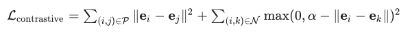
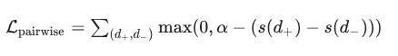

embedding模型和reranker模型的损失函数有什么区别？
总结下embedding模型和reranker模型的损失函数
引言
embedding模型和reranker模型是LLM RAG系统中的重要组件，作用类似于推荐、搜索领域的先召回再排序。因为目标不同，两个模型常用的损失函数也不相同，此处做个总结，便于复习。
一、embedding模型
1.1 embedding模型的目标是什么？
embedding模型的目标是将文本映射到低维稠密的向量空间中，使得语义相似的文本在向量空间中的距离更近 ，所以embedding模型的损失函数需要能表示出“相似的文本emb距离更近”的含义。
1.2 embedding模型常用的损失函数有哪些？
1.2.1 对比损失（Contrastive Loss）
- 核心思想：让正样本对（相似文本）的向量距离尽可能小，负样本对（不相似文本）的向量距离尽可能大。

其中，p 是正样本对集合， N 是负样本对集合， a 是 margin（边界值），控制负样本对的分离程度。
1.2.2 三元组损失（Triplet Loss）
核心思想：给定一个锚点（anchor）、一个正样本（positive）和一个负样本（negative），使锚点与正样本的距离小于锚点与负样本的距离。

a 是 margin，确保正负样本之间有足够的区分度。
1.2.3 InfoNCE Loss（基于 Softmax 的对比学习损失）
核心思想：在 batch 内计算相似度，使用交叉熵优化正样本对的概率。

s(·) 是相似度函数（如余弦相似度）， r 是温度系数，控制分布的平滑程度，r 越小，正负样本的概率差距越大； r 越大，正负样本的概率差距越小。
1.2.4 Multiple Negatives Ranking Loss（多负例排序损失）
核心思想：类似于 InfoNCE，但更适用于检索任务，优化正样本对的排名。

通常用于训练双塔结构的 Embedding 模型。
1.3 embedding模型常用的损失函数如何选型？
在实际应用中，Embedding 模型通常采用对比学习损失（如 InfoNCE）。
二、Rerank模型
2.1 Rerank 模型的目标是什么？
Rerank 模型的目标是 对初步检索到的候选doc进行重新排序，选择最相关的文档 。
2.2 Rerank 模型常用的损失函数有哪些？
2.2.1 Cross-Entropy Loss（交叉熵损失）
核心思想：将 rerank 任务视为判断query和检索到的doc相关或不相关的分类任务，计算预测概率与真实label的交叉熵。

yi 是真实标签（1=相关，0=不相关）， pi 是模型预测为相关（正样本）的概率。
2.2.2 Pairwise Ranking Loss（成对排序损失）
核心思想：优化doc对的相对顺序，使相关doc的得分高于不相关doc。

s(d)是模型对doc d 的评分， a 是 margin，确保正负样本之间有足够的区分度。
2.2.3 Listwise Loss（列表排序损失，如 LambdaLoss）
核心思想：直接优化整个排序列表的质量，考虑doc之间的相对重要性。

NDCG@k 是归一化折损累积增益，衡量排序质量。
该损失适用于LTR（ Learning to Rank）任务。
2.3 embedding模型常用的损失函数如何选型？
在实际应用中， Rerank 模型更倾向于使用排序优化损失（如 Pairwise Loss）。